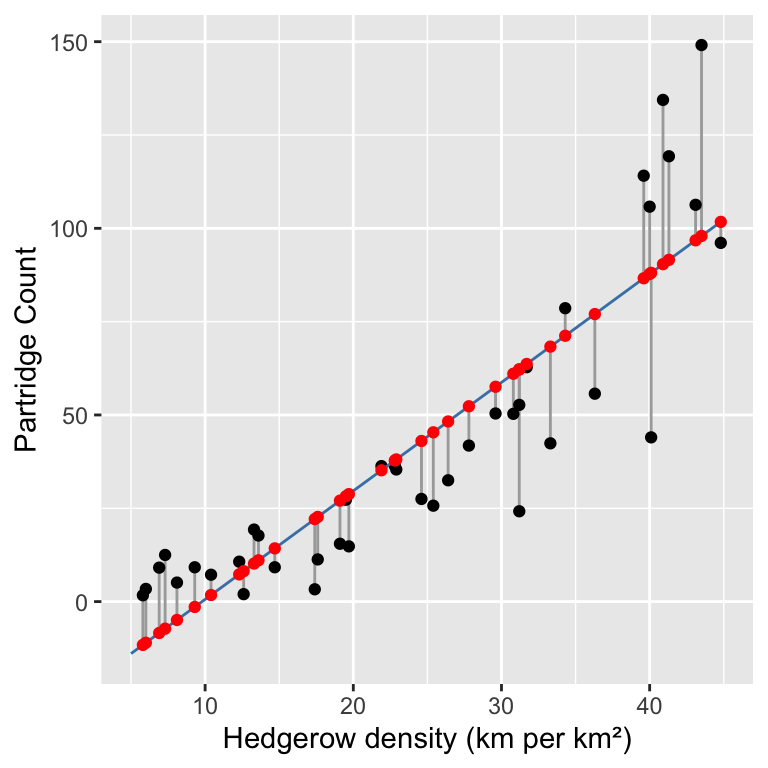
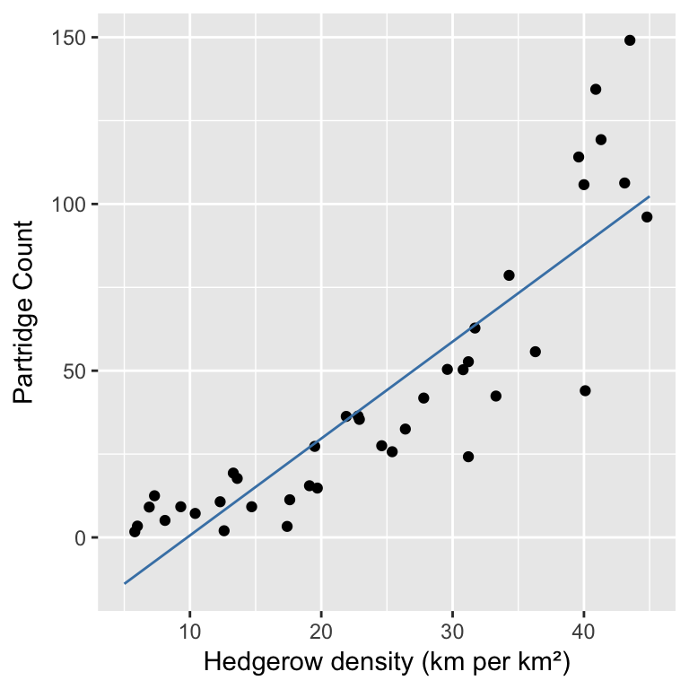
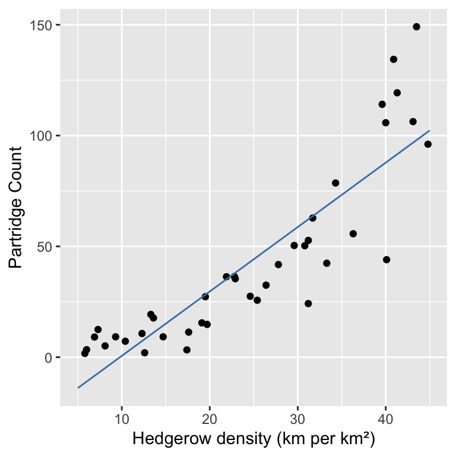
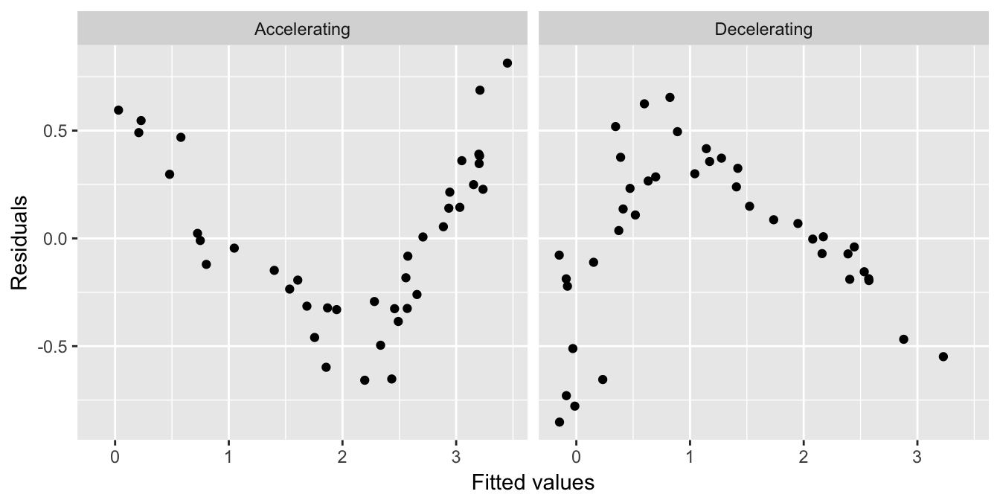
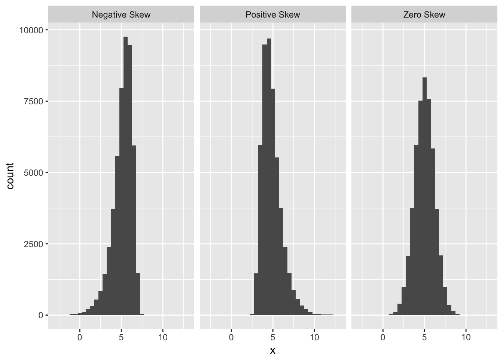
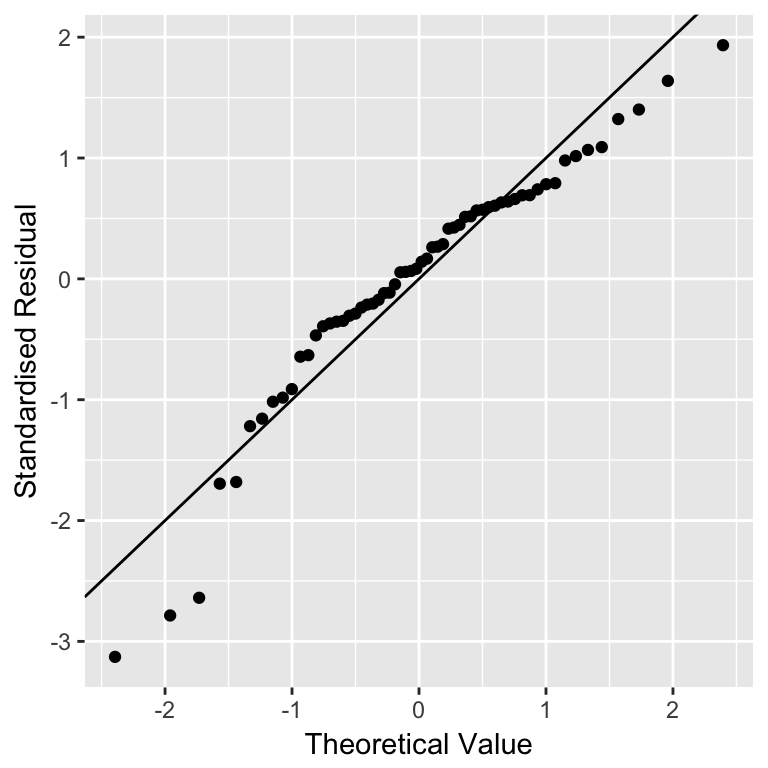
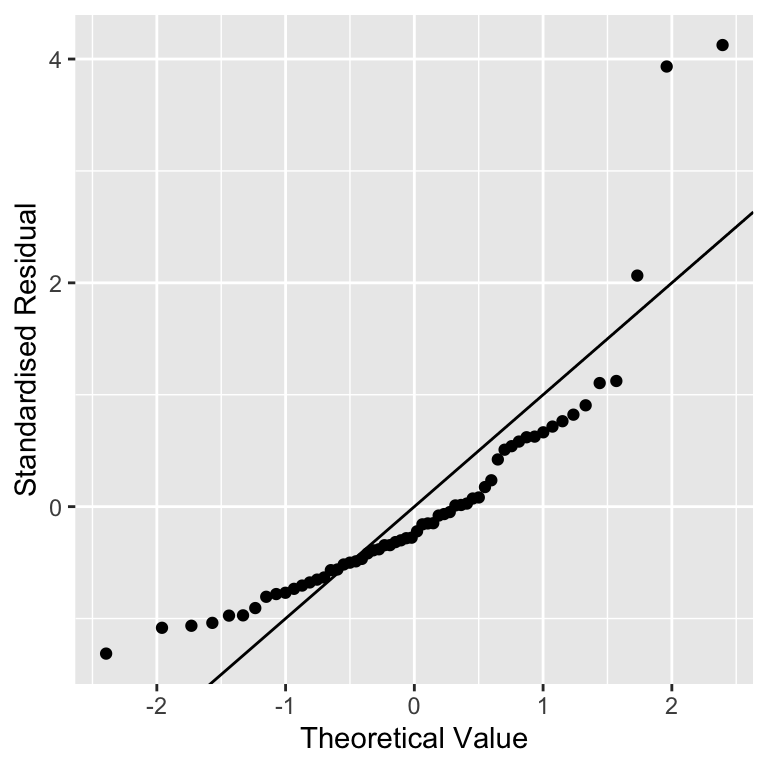

Chapter 19 Assumptions and diagnostics
We usually have an analysis in mind when we design an experiment or observational data collection protocol. It may be tempting to jump straight into this analysis without carefully examining the data first. This is never a good idea. In the past few chapters we have repeatedly emphasised that careful data analysis always begins with inspection of the data. Visualising a dataset helps us to understand the data and evaluate whether or not the assumptions of a statistical tool are likely to be violated.
As we learnt in the last section regression and one-way ANOVA are both types of linear model. They are parametric techniques and as such they make a number of assumptions that we need to be aware of. If our data do not meet the assumptions of the tests then we cannot rely on the results (i.e. the p-values) given by those tests.
19.1 Understanding data
We’ve been using ‘well-behaved’ data sets in this book so far, which tends to give the impression that visual inspections of the data are not all that necessary. Here’s an example of why it matters. Imagine we are interested in quantifying the relationship between two variables, called \(x\) and \(y\). We might be tempted to carry out a linear regression analysis without first inspecting these data to get straight to ‘the answer’: the coefficients of the linear regression model. This could be very misleading. Take a look at these four scatter plots:

These four artificial data sets were constructed by the statistician Francis Anscombe. The means and variances of \(x\) and \(y\) are nearly identical in all four data sets, and what’s more, the intercepts and slopes of the best fit regression lines are almost identical (the intercept and slope are 3.00 and 0.500, respectively). The nature of the relationship between \(x\) and \(y\) is quite obviously different among the four cases:
“Case 1” shows two linearly related, normally distributed variables. This is the kind of data we often hope for in a statistical analysis.
“Case 2” shows two variables that are not normally distributed, but there is a perfect non-linear relationship between the two.
“Case 3” shows an example the variables are perfectly linearly associated for all but one observation which ruins the perfect relationship.
“Case 4” shows an example where a single outlier generates an apparent relationship where the two variables are otherwise unrelated.
Each of these plots tells a different story about the relationship between \(x\) and \(y\), yet the linear regression model says the same thing is happening in each case. These are obviously somewhat pathological examples, but they clearly illustrate the kinds of issues that can, and do, arise with real data. There is a real risk we will apply an inappropriate analysis if we fail to detect these kinds of problems.
Every statistical model makes certain assumptions about the data10. Even if a dataset doesn’t exhibit the very obvious problems seen in the Anscombe examples, we still need to assess whether the assumptions of the statistical model we want to use are likely to be valid. For example, when working with a linear regression model, we started with a scatter plot of the response variable vs. the predictor variable. This allowed us to assess whether the two variables are linearly related. However, as we noted at the time linearity is not the only assumption we need to think about when carrying out a linear regression. In the rest of this chapter we’ll go through the remaining assumptions for regression and also consider the assumptions for a one-way ANOVA. In the [Introduction to regression diagnostics] and [Using regression diagnostics] chapters we’ll move on to how to check whether these assumptions are valid with your data.
19.2 Assumptions of regression
Let’s consider each of the assumptions of a regression, in their approximate order of importance:
Independence. The residuals must be independent. Another way of stating this assumption is that the value of each residual does not depend on the value of any others. This can be difficult to check. If the data are from a carefully designed experiment, everything should be OK. If the data are observational, then we need to be a lot more careful. This assumption matters because when the residuals are not independent any p-values we generate will be unreliable.
Measurement scale. The response (\(y\)) and predictor (\(x\)) variables are measured on an interval or ratio scale. It doesn’t really make sense to use categorical data in a regression11. This one is easy to assess.
Linearity. The relationship between the predictor \(x\) variable and the response \(y\) variable is linear. Obviously there is little point in fitting a straight line to data which clearly don’t form a straight line relationship. There may also be circumstances in which it is theoretically unlikely for a relationship to be linear, e.g. the length and weight of an animal will not be well described by a linear relationship because weight is roughly a cubic function of length. If the data fail this assumption then applying a mathematical transformation of \(x\) or \(y\) can help. We will come back to this idea in the [Data transformations] chapter.
Constant variance. The variance of the residuals is constant. This assumption essentially means the variability of the residuals is not related to the value of the predictor \(x\) variable. It is violated if the magnitude of the residuals increase or decrease markedly as \(x\) gets larger. If the data fail this assumption then again, sometimes applying a mathematical transformation of \(y\) will help.
Normality. The residuals are drawn from a normal distribution. This essentially means that for a particular value of \(x\) we would expect there to be a range of responses in \(y\) which follow a normal distribution. It is the distribution of the deviations of \(y\) from the fitted line (the residuals) that are assumed to be normal, not the raw \(y\) values. This means that we can generally only test this assumption after the line has been fitted. It does not make sense to evaluate this assumption by looking at the raw data.
Measurement error. The values of the predictor \(x\) variable are determined with negligible measurement error12. It is often hard to obtain the \(x\) values with absolutely no measurement error, but the error \(x\) in should at least be smaller than that in the \(y\) values. So for example, in the thermal tolerance experiment the temperature values (set by the experimenter) almost certainly have little error, so it is appropriate to use regression.
Next, we will learn how to check whether each assumption applies to your data. Assumptions 1 (independence), 2 (measurement scale) and 6 (measurement error) are features of the experimental design and the data collection protocol. They generally can not be explicitly checked by looking at the data. This is why it’s very important to consider how you are going to analyse your data before you start collecting it. You don’t want to spend lots of time and effort collecting data that you won’t be able to analyse.
A special set of tools called ‘regression diagnostics’ allow us to evaluate the other assumptions (linearity, constant varaince and normality). Regression diagnostics use properties of the fitted model to understand how well the model fits the data and evaluate the model assumptions.
19.3 Regression diagnostics
We’ll learn how to use regression diagnostics by working through an example. A survey was carried out to establish whether the abundance of hedgerows in agricultural land had an effect on the abundance of grey partridge. From an area of agricultural land covering several farms, 40 plots were selected which had land uses as similar as possible, but differed in the density of hedgerows (km hedgerow per km2). The density of partridges was established by visiting all fields in a study plot once immediately after dawn and once just before dusk, when partridges are most likely to be seen. Counts of birds observed were made on each visit and the dawn and dusk data were averaged to give a value for partridge abundance for each study plot.
Assumption 2 (measurement scale) is easy to evaluate. Assumptions 1 (independence) and 6 (measurement error) can’t be checked by just looking at the data; we have to think about the data to decide if there are any obvious reasons why they might not be valid. We’ll assume here that the independence assumption is true.
Why do you think we averaged the dawn and dusk partridge counts rather than including both counts in the model? Which assumption would this have invalidated? If you’re not sure ask a TA. We’ll come back to this more in the [Principles of experimental design] chapter.
As hedges cannot move there should be relatively little measurement error in the values of the predictor variable in this study. This leaves assumptions 3 (linearity), 4 (constant variance) and 5 (normality). There is a specific diagnostic plot for each of these.
The data are stored in a CSV file PARTRIDG_BIGSTUDY.CSV (not PARTRIDG.CSV!). The density of hedgerows (km per km2) is in the Hedgerow variable and the density of partridges (no. per km2) is in the Partridge variable. Read the data into R, calling it partridge. As always we’ll start by plotting our data.

Spend some time looking at the scatter plot. Do you think these data satisfy the linearity assumption?
19.3.1 Fitted values
In order to understand regression diagnostics we have to know what a fitted value is. The phrase ‘fitted value’ is just another expression for ‘predicted value’. Look at the plot below:

This shows the raw data (black points), the line of best fit (blue line), the residuals (the vertical grey lines), and the fitted values (red points). We find the fitted values by drawing a vertical line from each observation to the line of best fit. The values of the response variable (Partridge in this case) at the point where these touch the line of best fit are the ‘fitted values’. This means the fitted values are just predictions from the statistical model, generated for each value of the predictor variable. We can use the fitted function to extract these from a fitted model:
## 1 2 3 4 5 6 7 8 9 10 11 12 13
## -11.6 -11.0 -8.4 -7.2 -4.9 -1.4 1.8 7.3 8.2 10.2 11.1 14.3 22.1
## 14 15 16 17 18 19 20 21 22 23 24 25 26
## 22.7 27.0 28.2 28.8 35.2 37.8 38.1 43.0 45.4 48.3 52.3 57.6 61.0
## 27 28 29 30 31 32 33 34 35 36 37 38 39
## 62.2 62.2 63.7 68.3 71.2 77.0 86.6 87.8 88.1 90.4 91.6 96.8 98.0
## 40
## 101.7Notice that some of the fitted values are below zero. Why do we see negative fitted values? This doesn’t make much sense biologically (negative partridges?). Do you think it is a problem?
19.3.2 Checking the linearity assumption
The linearity assumption states that the general relationship between the response and predictor variable should look like a straight line. We can evaluate this assumption by constructing a residuals vs. fitted values plot.
This is a two-step process. First use the fitted and resid functions to construct a data frame containing the fitted values and residuals from the model:
We called the data frame plt_data. Once we have made this data frame, we use ggplot2 to plot the residuals against the fitted values:
ggplot(plt_data, aes(x = Fitted, y = Resids)) +
geom_point() +
xlab("Fitted values") + ylab("Residuals") This plot indicates that the residuals tend to be positive at the largest and smallest fitted values, and that they are generally negative in the middle of the range. This U-shaped pattern is indicative of a problem with our model. It tells us that there is some kind of pattern in the association between the two variables that is not being accommodated by the linear regression model we fitted. The U-shape indicates that the relationship is non-linear, and that it ‘curves upward’. We can see where this pattern comes from when we look at the raw data and fitted model again:

There is obviously some curvature in the relationship between partridge counts and hedgerow density, yet we fitted a straight line through the data. The U-shape in the residuals vs. fitted value plot comes from an ‘accelerating’ (or ‘convex’) relationship between the response and predictor variables.
What other kinds of patterns might we see in a residuals vs. fitted value plot? Two are particularly common: U-shapes and hump-shapes. Look at the two artificial data sets below…

The left hand plot is similar to the partridge data: it exhibits a curved, accelerating relationship between the response variable and the predictor variable. The right plot shows a different kind of relationship: there is a curved, decelerating relationship between the two variables. We can fit a linear model to each of these data sets, and then visualise the corresponding residuals vs. fitted value plots:

Here we see the characteristic U-shape and hump-shape patterns we mentioned above, these occur when there is an accelerating or decelerating relationship respectively between the response variable and predictor variable.
This may seem like a lot of extra work to evaluate an aspect of the model that we can assess by just plotting the raw data. This is true when we are working with a simple linear regression model. However, it can much harder to evaluate the linearity assumption when working with more complicated models where there is more than one predictor variable13. In these situations, a residuals vs. fitted values plot gives us a powerful way to evaluate whether or not the assumption of a linear relationship is reasonable.
That’s enough about the residuals vs. fitted values plot. Let’s move on to the normality evaluation…
19.3.3 Checking the normality assumption
How should we evaluate the normality assumption of linear regression? That is, how do we assess whether or not the residuals are drawn from a normal distribution? We could extract the residuals from a model and plot their distribution, but there is a more powerful graphical technique to available to us: the normal probability plot.
The normal probability plot is used to identify departures from normality. If we know what we are looking for, we can identify many different kinds of problems, but to keep life simple we will focus on the most common type of assessment: determining whether or not the distribution of residuals is excessively skewed. Remember the concept of distributional skew? A skewed distribution is just one that is not symmetric. For example, the first distribution below is skewed to the left (‘negative skew’), the second is skewed to the right (‘positive skew’), and the third is symmetric (‘zero skew’):

The skewness in the first two distributions is easy to spot because they contain a lot of data and the skewness is quite pronounced. A normal probability plot allows us to pick up potential problems when we are not so lucky. The methodology underlying construction of a normal probability plot is quite technical, so we will only try to give a flavour of it here. Don’t worry if the next segment is confusing—interpreting a normal probability plot is much easier than making one.
We’ll work with the partridge example again. We start by extracting the residuals from the fitted model into a vector, using the resids function, and then standardise these by dividing them by their standard deviation:
The standardisation step is not essential, but dividing the raw residuals by their standard deviation ensures that the standard deviation of the new residuals is equal to 1. Standardising the residuals like this makes it a little easier to compare more than one normal probability plot. We call these new residuals the ‘standardised residuals’.
The next step is to find the rank order of each residual. That is, we sort the data from lowest to highest, and find the position of each case in the sequence (this is its ‘rank’). The function order can do this:
## [1] 35 27 30 32 22 13 23 21 17 15 14 26 24 28 25 9 40 12 20 19 16 29 18 8 7
## [26] 11 31 10 38 5 6 1 2 3 34 4 33 37 36 39This tells us that the first residual is the 35th largest, the second is the 27th largest, the third is the 30th largest, and so on.
The last step is the tricky one. Once we have established the rank order of the residuals, we ask the following question: if the residuals really were drawn from a normal distribution, what is their most likely value, based on their rank? We can’t really explain how to do this without delving into the mathematics of distributions, so this will have to be a ‘trust us’ situation. As usual, R can do this for us, and we don’t even need the ranks—we just calculated them to help us explain what happens when we build a normal probability plot. The function we need is called qqnorm:
The qqnorm doesn’t produce a data frame by default, so we had to convert the result using a function called as.data.frame. This extra little step isn’t really all that important.
The all_resids object is now a data frame with two variables: x contains the theoretical values of normally distributed residuals, based on the rank orders of the residuals from the model, and y contains the actual standardised residuals. Here are the first 10 values:
## x y
## 1 0.7977768 0.6855052
## 2 0.8871466 0.7431596
## 3 0.9842350 0.9021176
## 4 1.2133396 1.0174265
## 5 0.6356570 0.5162945
## 6 0.7143674 0.5478778
## 7 0.2858409 0.2800927
## 8 0.2211187 0.1759340
## 9 -0.2858409 -0.3173156
## 10 0.4887764 0.4693592Finally, we can plot these against one another to make a normal probability plot:
ggplot(all_resids, aes(x = x, y = y)) +
geom_point() + geom_abline(intercept = 0, slope = 1) +
xlab("Theoretical Value") + ylab("Standardised Residual")
We used geom_abline(intercept = 0, slope = 1) to add the one-to-one (1:1) line. We haven’t used this function before and we won’t need it again. The one-to-one line is just a line with a slope of 1 and an intercept of 0—if an \(x\) value and \(y\) value are equal their corresponding point will lie on this line.
Don’t worry too much if those calculations seem opaque. We said at the beginning of this section that it’s not important to understand how a normal probability plot is constructed. It is important to know how to interpret one. The important feature to look out for is the positioning of the points relative to the 1:1 line. If the residuals really are drawn from a normal distribution they should generally match the theoretical values, i.e. the points should lie on the 1:1 line.
In the partridge example that is exactly what we see. A couple of the more extreme values diverge a little, but this isn’t something to worry about. We never expect to see a perfect 1:1 relationship in these kinds of plots. The vast majority of the points are very close to the 1:1 line though, which provides strong evidence that the residuals probably are sampled from a normal distribution.
What does a normal probability plot look like when residuals are not consistent with the normality assumption? Deviations from a straight line suggest departures from normality. How do right skew (‘positive skew’) and left skew (‘negative skew’) manifest themselves in a normal probability plot? Here is the normal probability plot produced using data from the left-skewed distribution above:  Rather than a straight line, we see a decelerating curved line. This is the signature of residuals that are non-normal, and left-skewed. We see the opposite sort of curvature when the residuals are right-skewed:
You should always use normal probability plots to assess normality assumptions in your own analyses. They work with every kind of model fitted by the lm function. What is more, they also work reasonably well when we only have a few residuals to play with. Seven is probably the lowest number we might accept—with fewer points it becomes hard to distinguish between random noise and a real deviation from normality.
That’s enough discussion of normal probability plots. Let’s move on to the constant variance evaluation…
19.3.4 Checking the constant variance assumption
How do we evaluate the constant variance assumption of a linear regression? That is, how do we assess whether or not the variability of the residuals is constant or not? This assumption can be evaluated in a similar way to the linearity assumption, by producing something called a ‘scale-location plot’. We construct this by plotting residuals against the fitted values, but instead of plotting raw residuals, we transform them first using the following ‘recipe’:
Standardise the residuals by dividing them by their standard deviation. Remember, this ensures the new residuals have a standard deviation of 1.
Find the absolute value of the residuals produced in step 1. If they are negative, make them positive, otherwise, leave them alone.
Take the square root of the residuals produced in step 2.
These calculations are simple enough in R. We’ll demonstrate them using the partridge data set again:
# extract the residuals
sqrt_abs_resids <- resid(partridge_model)
# step 1. standardise them
sqrt_abs_resids <- sqrt_abs_resids / sd(sqrt_abs_resids)
# step 2. find their absolute value
sqrt_abs_resids <- abs(sqrt_abs_resids)
# step 3. square root these
sqrt_abs_resids <- sqrt(sqrt_abs_resids)Now we use the fitted function to extract the fitted values from the model and place these in a data frame with the transformed residuals:
We called the data frame plt_data. Once we have made this data frame, we use ggplot2 to plot the transformed residuals against the fitted values:
ggplot(plt_data, aes(x = Fitted, y = Resids)) +
geom_point() +
xlab("Fitted values") + ylab("Square root of absolute residuals") This is a scale-location plot. Why is this useful? We want to assess whether or not the size of these new residuals increase or decrease as the fitted values get larger. If they do not—the relationship is essentially flat—then we can conclude that the variability in the residuals is constant. Otherwise, we have to conclude that the constant variance assumption is violated.
This is a scale-location plot. Why is this useful? We want to assess whether or not the size of these new residuals increase or decrease as the fitted values get larger. If they do not—the relationship is essentially flat—then we can conclude that the variability in the residuals is constant. Otherwise, we have to conclude that the constant variance assumption is violated.
Although the pattern is not exactly clear cut, in this example there seems to be a bit of an upward trend with respect to the fitted values. This suggests that the variability (more formally, the ‘variance’) of the residuals increases with the fitted values. Larger partridge counts seem to be associated with more variability. This is a very common feature of count data.
Poor model fit complicates scale-location plots
It is worth reflecting on the ambiguity in this pattern. It is suggestive, but it certainly isn’t as clear as the U-shape in the residuals vs. fitted values plot used earlier. There is one potentially important reason for this ambiguity. The model we have used to describe the relationship between partridge counts and hedgerow density is not a very good model for these data. There is curvature in the relationship that we failed to take account of, and consequently, this lack of fit is impacting the scale-location plot. When a model does not fit the data well, the scale-location plot does not only describe the variability in the residuals. It also reflects the lack of fit. The take-home message is that it is a good idea to fix a lack of fit problem before trying to evaluate the constant variance assumption.
Non-constant variance can be a problem because it affects the validity of p-values associated with a model. You should aim to use scale-location plots to assess the constant variance assumption in your own analyses, but keep in mind that a scale-location plot may also reflect non-linearity.
19.4 Assumptions of one-way ANOVA
As regression and ANOVA are both types of linear model it is unsurprising that the assumptions for these two types of model are similar. There are some differences however, for example the linearity assumption does not make any sense with an ANOVA as the response variable is not numeric. Let’s step through each of the assumptions of a one-way ANOVA:
Independence. If the experimental units of the data are not independent, then the p-values generated by an F-test in an ANOVA will not be reliable. This one is important. Even mild non-independence can be a serious problem.
Measurement scale. The response variable (\(y\)) should be measured on an interval or ratio scale.
Equal variance. The validity of F-tests associated with ANOVA depends on an assumption of equal variance in the treatment groups. If this assumption is not supported by the data, then it needs to be addressed. If you ignore it, the p-values that you generate cannot be trusted. There is a version of one-way ANOVA that can work with unequal variances, but we won’t study it in this course.
Normality. The validity of F-tests associated with ANOVA also depends on the assumption that the residuals are drawn from a normal distribution. ANOVA is reasonably robust to small departures from normality, but larger departures can start to matter. Unlike the t-test, having a large number of samples doesn’t make this assumption less important.
Strictly speaking, assumptions 3 and 4 really apply to the (unobserved) population from which the experimental samples are derived, i.e., the equal variance and normality assumptions are with respect to the variable of interest in the population. However, we often just informally refer to ‘the data’ when discussing the assumptions of ANOVA.
The term ‘regression diagnostic’ is a bit of a misnomer. A more accurate term might be ‘linear model diagnostic’ but no one really uses this. Regression diagnostics can be used with many different kinds of models. In fact, the diagnostic plots we have introduced above can be applied to any model fitted by the lm function, including ANOVA models. We’ll see this in the next chapter
Even so-called ‘non-parametric’ models have underpinning assumptions; these are just not as restrictive as their parametric counterparts.↩︎
It sometimes makes sense to use a regression analysis when the predictor variable is an ordinal categorical variable. It depends what you want to do with the resulting model. However, some people disagree with this approach, so it’s best to avoid doing it unless you’re confident you can justify it.↩︎
It is the measurement error, not the sampling error, that matters. This means it is fine to use regression when the \(x\) variable represent a sample from a population.↩︎
This is the situation we face with multiple regression. A multiple regression is a type of regression with more than one predictor variable—we don’t study them in this course, but they are often used in biology.↩︎